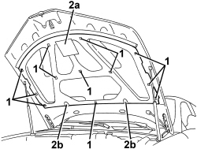

7025A22 SOUNDPROOFING LINING FOR BONNET LID - R+R
- Path
- Procedures > 70 FITTINGS > 7025 COMPARTMENT COVERS > 7025A BONNET LID > 7025A22 SOUNDPROOFING LINING FOR BONNET LID - R+R
- Kind
- repair procedure (removal / refitting; the operation number is the code)
- Applies to
- all engines; all production periods
- Interactive page
- https://sloeber94.github.io/elrnDB-aBrrSpdr/en/#/946002564
Applies to: all engines; all production periods
 Removing
Removing
 Refitting
Refitting- Open the bonnet.
1. Release the trim retainers.
2. Remove the trim (2a) releasing the retainers (2b).

Applies to: all engines; all production periods
Refitting
Removing- Check that the trim is not damaged.
- Position the trim and attach the retainers.
- Close the bonnet.